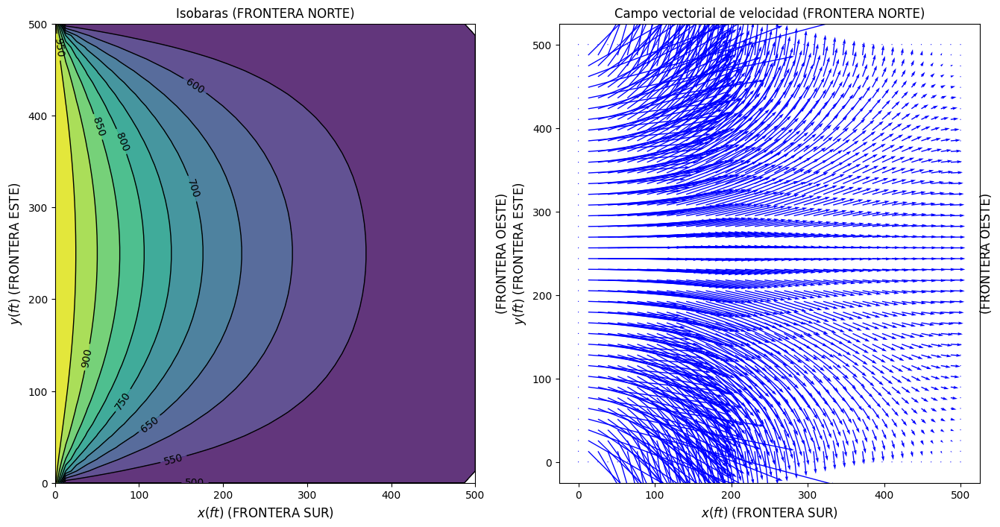

import numpy as np
import matplotlib.pyplot as plt
import ipywidgets as widgets
import funciones_personalizadas as fp
from scipy.sparse import lil_matrix
from scipy.sparse.linalg import spsolve
from scipy.sparse.linalg import gmres
from scipy.sparse.linalg import bicgstab8 Flujo Monofásico en 2D con SciPy
Objetivo general - El alumno resolverá la ecuación de Laplace en dos dimensiones, la cual representa el flujo monofásico incompresible en estado estable, con propiedades del fluido y del medio constantes. Mediante la solución de esta ecuación, se conocerán los tipos de condiciones de frontera y los tipos de solvers que se aplican en la solución de problemas relacionados con la Simulación Matemática de Yacimientos (SMY).
Objetivos particulares - Conocer los diferentes tipos de “solvers” para los sistemas de ecuaciones lineales. - Identificar la dirección del flujo de fluidos de acuerdo a las isobaras.
8.1 Contenido
9 1 Implementación de SciPy
La biblioteca de scipy permite utilizar una basta cantidad de algoritmos, solvers y funciones cientificas. El uso de éstas logra resolver el problema cientifico en mucho menos tiempo. Como alternativa al algoritmo de Thomas, se plantea el uso de los siguientes solvers: - gmres - bicgstab - spsolve
9.0.1 Funciones auxiliares del jupyter anterior
- ecuaciones_discretizadas
- condiciones_de_frontera_dirichlet
def ecuaciones_discretizadas(lx, ly, nx, ny, hx, hy):
"""
Esta funcion genera los coeficientes de la ecuacion de flujo monofasico discretizada. No se consideran las
condiciones de frontera.
Parametros
----------
lx, ly : entero o flotante.
Longitud en el eje x e y.
nx, ny : int, int.
Nodos en de la malla rectangular.
Retorna
-------
AP,AE,AW,AN,AS,B : ndarray.
Arreglos en 2D para generar una matriz pentadiagonal.
"""
# se definen los arreglos en dos dimensiones
AP = np.zeros((nx,ny))
AE = np.zeros((nx,ny))
AW = np.zeros((nx,ny))
AN = np.zeros((nx,ny))
AS = np.zeros((nx,ny))
B = np.zeros((nx,ny))
for j in range (1,ny-1):
for i in range (1,nx-1):
AP[i][j]=2.0/hx**2.0+2.0/hy**2.0
AE[i][j]=1.0/hx**2.0
AW[i][j]=1.0/hx**2.0
AN[i][j]=1.0/hy**2.0
AS[i][j]=1.0/hy**2.0
B[i][j]=0.0
return AP,AE,AW,AN,AS,Bdef condiciones_de_frontera_dirichlet(P1, P2, P3, P4, AP, AW, AE, AN, AS, B, nx, ny):
"""
Esta función modifica los coeficientes y asigna las condiciones de frotera de primera clase.
"""
for i in range (1,nx-1):
AP[i][0]=1.0
AW[i][0]=0.0
AE[i][0]=0.0 #Frontera sur
AN[i][0]=0.0
B[i][0]=P2
AP[i][ny-1]=1.0
AW[i][ny-1]=0.0
AE[i][ny-1]=0.0 #Frontera norte
AS[i][ny-1]=0.0
B[i][ny-1]=P4
for j in range (0,ny):
AP[0][j]=1.0
AE[0][j]=0.0 #Frontera Oeste
AN[0][j]=0.0
AS[0][j]=0.0
B[0][j]=P1
AP[nx-1][j]=1.0
AW[nx-1][j]=0.0
AN[nx-1][j]=0.0 #Frontera Este
AS[nx-1][j]=0.0
B[nx-1][j]=P39.0.2 Uso de SciPy
def flujo_monofasico_2d_scipy(nx, ny, lx, ly):
"""
Esta función resuelve el problema de flujo monofásico en 2D con ayuda de la libreria SciPy y sus solvers.
"""
"""
|---P4(NORTE)---|
| |
P1(OESTE) P3(ESTE)
| |
|----P2(SUR)----|
"""
P1, P2, P3, P4 = 1000.0, 500.0, 500.0, 500.0
Press= np.zeros((nx,ny))
#Generación de malla para graficar
x = np.linspace(0, lx, nx)
y = np.linspace(0, ly, ny)
malla_x, malla_y = np.meshgrid(x, y)
# se calcula el espaciamiento entre nodos
hx = lx/(nx-1)
hy = ly/(ny-1)
# Llamar a la función para obtener los coeficientes
AP, AW, AE, AN, AS, B = ecuaciones_discretizadas(lx, ly, nx, ny, hx, hy)
#Aplicar fronteras de primera clase (Dirichlet)
condiciones_de_frontera_dirichlet(P1, P2, P3, P4, AP, AW, AE, AN, AS, B, nx, ny)
n = nx*ny
A = np.zeros((n,n))
Press1 = np.zeros(n)
B1 = np.zeros(n)
for j in range (0,ny):
for i in range (0,nx):
k=i+nx*j
A[k][k] = AP[i][j]
B1[k] = B[i][j]
if j < ny-1: A[k][k+nx] = -AN[i][j]
if i < nx-1: A[k][k+1] = -AE[i][j]
if i > 0: A[k][k-1] = -AW[i][j]
if j > 0: A[k][k-nx] = -AS[i][j]
A1 = lil_matrix(A)
A1 = A1.tocsr()
Press1 = gmres(A1, B1, tol=1.0E-07, restart = 2000) #scipy.sparse.linalg.gmres(A, b, x0=None, tol=1e-05, restart=None, maxiter=None, xtype=None, M=None, callback=None, restrt=None)[source]¶
#Press1 = bicgstab(A1, B1, tol=1.0E-05) #scipy.sparse.linalg.gmres(A, b, x0=None, tol=1e-05, restart=None, maxiter=None, xtype=None, M=None, callback=None, restrt=None)[source]¶
#Press1 = spsolve(A1, B1) #scipy.sparse.linalg.gmres(A, b, x0=None, tol=1e-05, restart=None, maxiter=None, xtype=None, M=None, callback=None, restrt=None)[source]¶
for j in range (0,ny):
for i in range (0,nx):
k=i+j*nx
Press[i][j]=Press1[0][k] #Cuando se utilizan los algoritmos del subespacio de Krilov el resultado es una matriz de tamaño 1 X nx*ny
#Press[i][j]=Press1[k] #Cuando se utiliza spsolve (descomposición LU) el resultado es un vector de tamaño 1 X nx*ny
# graficar
fp.graficar_isobaras_presion_y_campo_velocidad(nx, ny, hx, hy, malla_x, malla_y, Press)nx, ny = 40, 40
lx, ly = 500, 500%%time
flujo_monofasico_2d_scipy(nx, ny, lx, ly)
CPU times: user 871 ms, sys: 512 ms, total: 1.38 s
Wall time: 859 ms9.1 Ejercicio 3 - Uso de SciPy
En el script widgets.interact(flujo_monofasico_2d_scipy_animacion, presion_cambiante = widgets.Play(min=600, max=1000)):
1.- Cambia el rango de presiones desde 750 psi a 1,400 psi.En el script flujo_monofasico_2d_scipy_animacion(presion_cambiante):
2.- Asigna la variable --> presion_cambiante a P3 y el resto de presiones con el valor de 600 psi.
3.- Comenta las lineas de codigo pertenecientes al solver gmres --> Press1 = gmres(A1, B1, tol=1.0E-07, restart = 2000) y --> Press[i][j]=Press1[0][k]
4.- Descomenta las lineas de codigo pertenecientes a spsolve --> Press1 = spsolve(A1, B1) y --> Press[i][j]=Press1[k]
5.- Ejecuta las celdas de codigo modificadas y visualiza los resultados